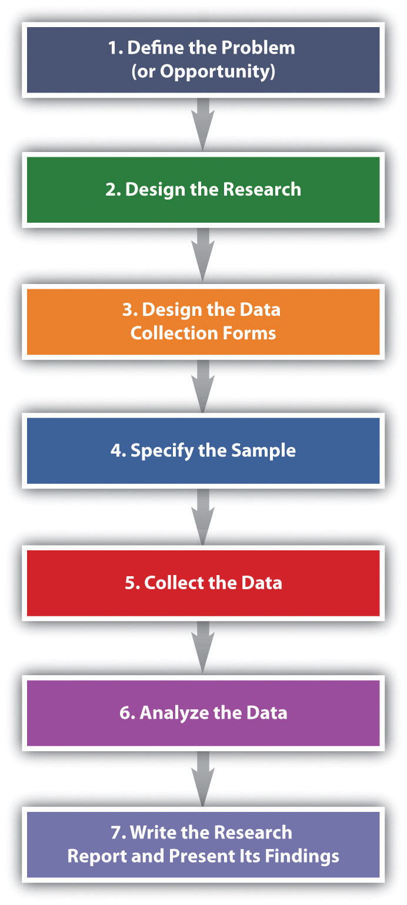

The basic steps used to conduct marketing research are shown in Figure 10.6 "Steps in the Marketing Research Process". Next, we discuss each step.
Figure 10.6 Steps in the Marketing Research Process
There’s a saying in marketing research that a problem half defined is a problem half solved. Defining the “problem” of the research sounds simple, doesn’t it? Suppose your product is tutoring other students in a subject you’re a whiz at. You have been tutoring for a while, and people have begun to realize you’re darned good at it. Then, suddenly, your business drops off. Or it explodes, and you can’t cope with the number of students you’re being asked help. If the business has exploded, should you try to expand your services? Perhaps you should subcontract with some other “whiz” students. You would send them students to be tutored, and they would give you a cut of their pay for each student you referred to them.
Both of these scenarios would be a problem for you, wouldn’t they? They are problems insofar as they cause you headaches. But are they really the problem? Or are they the symptoms of something bigger? For example, maybe your business has dropped off because your school is experiencing financial trouble and has lowered the number of scholarships given to incoming freshmen. Consequently, there are fewer total students on campus who need your services. Conversely, if you’re swamped with people who want you to tutor them, perhaps your school awarded more scholarships than usual, so there are a greater number of students who need your services. Alternately, perhaps you ran an ad in your school’s college newspaper, and that led to the influx of students wanting you to tutor them.
Businesses are in the same boat you are as a tutor. They take a look at symptoms and try to drill down to the potential causes. If you approach a marketing research company with either scenario—either too much or too little business—the firm will seek more information from you such as the following:
The key is to look at all potential causes so as to narrow the parameters of the study to the information you actually need to make a good decision about how to fix your business if revenues have dropped or whether or not to expand it if your revenues have exploded.
The next task for the researcher is to put into writing the research objective. The research objectiveThe goal(s) marketing research is supposed to accomplish. is the goal(s) the research is supposed to accomplish. The marketing research objective for your tutoring business might read as follows:
To survey college professors who teach 100- and 200-level math courses to determine why the number of students referred for tutoring dropped in the second semester.
This is admittedly a simple example designed to help you understand the basic concept. If you take a marketing research course, you will learn that research objectives get a lot more complicated than this. The following is an example:
“To gather information from a sample representative of the U.S. population among those who are ‘very likely’ to purchase an automobile within the next 6 months, which assesses preferences (measured on a 1–5 scale ranging from ‘very likely to buy’ to ‘not likely at all to buy’) for the model diesel at three different price levels. Such data would serve as input into a forecasting model that would forecast unit sales, by geographic regions of the country, for each combination of the model’s different prices and fuel configurations.Alvin Burns and Ronald Bush, Marketing Research, 6th ed. (Upper Saddle River, NJ: Prentice Hall, 2010), 85.”
Now do you understand why defining the problem is complicated and half the battle? Many a marketing research effort is doomed from the start because the problem was improperly defined. Coke’s ill-fated decision to change the formula of Coca-Cola in 1985 is a case in point: Pepsi had been creeping up on Coke in terms of market share over the years as well as running a successful promotional campaign called the “Pepsi Challenge,” in which consumers were encouraged to do a blind taste test to see if they agreed that Pepsi was better. Coke spent four years researching “the problem.” Indeed, people seemed to like the taste of Pepsi better in blind taste tests. Thus, the formula for Coke was changed. But the outcry among the public was so great that the new formula didn’t last long—a matter of months—before the old formula was reinstated. Some marketing experts believe Coke incorrectly defined the problem as “How can we beat Pepsi in taste tests?” instead of “How can we gain market share against Pepsi?”Alvin Burns and Ronald Bush, Marketing Research, 6th ed. (Upper Saddle River, NJ: Prentice Hall, 2010), 87–88.
New Coke Is It! 1985
http://www.youtube.com/watch?v=W6t7deaplgYThis video documents the Coca-Cola Company’s ill-fated launch of New Coke in 1985.
1985 Pepsi Commercial—“They Changed My Coke”
http://www.youtube.com/watch?v=8_hvOBnsirIThis video shows how Pepsi tried to capitalize on the blunder.
The next step in the marketing research process is to do a research design. The research designAn outline that specifies the research data to be gathered, from whom, how, and when the data will be analyzed once it has been obtained. is your “plan of attack.” It outlines what data you are going to gather and from whom, how and when you will collect the data, and how you will analyze it once it’s been obtained. Let’s look at the data you’re going to gather first.
There are two basic types of data you can gather. The first is primary data. Primary dataData collected using hands-on tools such as interviews or surveys to answer a question for a specific research project. is information you collect yourself, using hands-on tools such as interviews or surveys, specifically for the research project you’re conducting. Secondary dataData already collected by your firm or another organization for purposes other than the marketing research project at hand. is data that has already been collected by someone else, or data you have already collected for another purpose. Collecting primary data is more time consuming, work intensive, and expensive than collecting secondary data. Consequently, you should always try to collect secondary data first to solve your research problem, if you can. A great deal of research on a wide variety of topics already exists. If this research contains the answer to your question, there is no need for you to replicate it. Why reinvent the wheel?
Your company’s internal records are a source of secondary data. So are any data you collect as part of your marketing intelligence gathering efforts. You can also purchase syndicated research. Syndicated researchPrimary data marketing research firms collect on a regular basis and sell to other companies. is primary data that marketing research firms collect on a regular basis and sell to other companies. J.D. Power & Associates is a provider of syndicated research. The company conducts independent, unbiased surveys of customer satisfaction, product quality, and buyer behavior for various industries. The company is best known for its research in the automobile sector. One of the best-known sellers of syndicated research is the Nielsen Company, which produces the Nielsen ratings. The Nielsen ratings measure the size of television, radio, and newspaper audiences in various markets. You have probably read or heard about TV shows that get the highest (Nielsen) ratings. (Arbitron does the same thing for radio ratings.) Nielsen, along with its main competitor, Information Resources, Inc. (IRI), also sells businesses scanner-based researchInformation collected by scanners at checkout stands in stores.. Scanner-based research is information collected by scanners at checkout stands in stores. Each week Nielsen and IRI collect information on the millions of purchases made at stores. The companies then compile the information and sell it to firms in various industries that subscribe to their services. The Nielsen Company has also recently teamed up with Facebook to collect marketing research information. Via Facebook, users will see surveys in some of the spaces in which they used to see online ads.Alan Rappeport and David Gelles, “Facebook to Form Alliance with Nielsen,” Financial Times, September 23, 2009, 16.
By contrast, MarketResearch.com is an example of a marketing research aggregator. A marketing research aggregatorA marketing research company that doesn’t conduct its own research but instead buys it from other marketing research companies and then sells the reports in their entirety or in pieces to other firms. is a marketing research company that doesn’t conduct its own research and sell it. Instead, it buys research reports from other marketing research companies and then sells the reports in their entirety or in pieces to other firms. Check out MarketResearch.com’s Web site. As you will see there are a huge number of studies in every category imaginable that you can buy for relatively small amounts of money.
Figure 10.7
Market research aggregators buy research reports from other marketing research companies and then resell them in part or in whole to other companies so they don’t have to gather primary data.
Source: http://www.marketresearch.com.
Your local library is a good place to gather free secondary data. It has searchable databases as well as handbooks, dictionaries, and books, some of which you can access online. Government agencies also collect and report information on demographics, economic and employment data, health information, and balance-of-trade statistics, among a lot of other information. The U.S. Census Bureau collects census data every ten years to gather information about who lives where. Basic demographic information about sex, age, race, and types of housing in which people live in each U.S. state, metropolitan area, and rural area is gathered so that population shifts can be tracked for various purposes, including determining the number of legislators each state should have in the U.S. House of Representatives. For the U.S. government, this is primary data. For marketing managers it is an important source of secondary data.
The Survey Research Center at the University of Michigan also conducts periodic surveys and publishes information about trends in the United States. One research study the center continually conducts is called the “Changing Lives of American Families” (http://www.isr.umich.edu/home/news/research-update/2007-01.pdf). This is important research data for marketing managers monitoring consumer trends in the marketplace. The World Bank and the United Nations are two international organizations that collect a great deal of information. Their Web sites contain many free research studies and data related to global markets. Table 10.1 "Examples of Primary Data Sources versus Secondary Data Sources" shows some examples of primary versus secondary data sources.
Table 10.1 Examples of Primary Data Sources versus Secondary Data Sources
| Primary Data Sources | Secondary Data Sources |
|---|---|
| Interviews | Census data |
| Surveys | Web sites |
| Publications | |
| Trade associations | |
| Syndicated research and market aggregators |
When you are gathering secondary information, it’s always good to be a little skeptical of it. Sometimes studies are commissioned to produce the result a client wants to hear—or wants the public to hear. For example, throughout the twentieth century, numerous studies found that smoking was good for people’s health. The problem was the studies were commissioned by the tobacco industry. Web research can also pose certain hazards. There are many biased sites that try to fool people that they are providing good data. Often the data is favorable to the products they are trying to sell. Beware of product reviews as well. Unscrupulous sellers sometimes get online and create bogus ratings for products. See below for questions you can ask to help gauge the credibility of secondary information.
Now let’s look specifically at the types of research designs that are utilized. By understanding different types of research designs, a researcher can solve a client’s problems more quickly and efficiently without jumping through more hoops than necessary. Research designs fall into one of the following three categories:
An exploratory research designA less-structured type of research design used to initially investigate a marketing research project that hasn’t yet been defined well enough for an in-depth study to be conducted. is useful when you are initially investigating a problem but you haven’t defined it well enough to do an in-depth study of it. Perhaps via your regular market intelligence, you have spotted what appears to be a new opportunity in the marketplace. You would then do exploratory research to investigate it further and “get your feet wet,” as the saying goes. Exploratory research is less structured than other types of research, and secondary data is often utilized.
One form of exploratory research is qualitative research. Qualitative researchAny form of research that results in data that is not quantitative and often seeks to answer questions such as why consumers do something, rather than how much or how often they do it. is any form of research that includes gathering data that is not quantitative, and often involves exploring questions such as why as much as what or how much. Different forms, such as depth interviews and focus group interviews, are common in marketing research.
The depth interviewAn exploratory research technique of engaging in detailed, one-on-one, question-and-answer sessions with potential buyers.—engaging in detailed, one-on-one, question-and-answer sessions with potential buyers—is an exploratory research technique. However, unlike surveys, the people being interviewed aren’t asked a series of standard questions. Instead the interviewer is armed with some general topics and asks questions that are open ended, meaning that they allow the interviewee to elaborate. “How did you feel about the product after you purchased it?” is an example of a question that might be asked. A depth interview also allows a researcher to ask logical follow-up questions such as “Can you tell me what you mean when you say you felt uncomfortable using the service?” or “Can you give me some examples?” to help dig further and shed additional light on the research problem. Depth interviews can be conducted in person or over the phone. The interviewer either takes notes or records the interview.
Focus groups and case studies are often utilized for exploratory research as well. A focus groupA group of potential buyers brought together to discuss a marketing research topic with one another. is a group of potential buyers who are brought together to discuss a marketing research topic with one another. A moderator is used to focus the discussion, the sessions are recorded, and the main points of consensus are later summarized by the market researcher. Textbook publishers often gather groups of professors at educational conferences to participate in focus groups. However, focus groups can also be conducted on the telephone, in online chat rooms, or both, using meeting software like WebEx. The basic steps of conducting a focus group are outlined below.
A case studyA study that looks at how another company, or companies, solved a problem being researched. looks at how another company solved the problem that’s being researched. Sometimes multiple cases, or companies, are used in a study. Case studies nonetheless have a mixed reputation. Some researchers believe it’s hard to generalize, or apply, the results of a case study to other companies. Nonetheless, collecting information about companies that encountered the same problems your firm is facing can give you a certain amount of insight about what direction you should take. In fact, one way to begin a research project is to carefully study a successful product or service.
Two other types of qualitative data used for exploratory research are ethnographies and projective techniques. In an ethnographyA type of study whereby marketing researchers interview, observe, and often videotape people while they work, live, shop, and play., researchers interview, observe, and often videotape people while they work, live, shop, and play. The Walt Disney Company has recently begun using ethnographers to uncover the likes and dislikes of boys aged six to fourteen, a financially attractive market segment for Disney, but one in which the company has been losing market share. The ethnographers visit the homes of boys, observe the things they have in their rooms to get a sense of their hobbies, and accompany them and their mothers when they shop to see where they go, what the boys are interested in, and what they ultimately buy. (The children get seventy-five dollars out of the deal, incidentally.)Brook Barnes, “Disney Expert Uses Science to Draw Boy Viewers,” New York Times, April 15, 2009, http://www.nytimes.com/2009/04/14/arts/television/14boys.html?pagewanted=1&_r=1 (accessed December 14, 2009).
Projective techniquesAn exploratory research technique used to reveal information research respondents might not reveal by being asked directly. are used to reveal information research respondents might not reveal by being asked directly. Asking a person to complete sentences such as the following is one technique:
People who buy Coach handbags __________.
(Will he or she reply with “are cool,” “are affluent,” or “are pretentious,” for example?)
KFC’s grilled chicken is ______.
Or the person might be asked to finish a story that presents a certain scenario. Word associations are also used to discern people’s underlying attitudes toward goods and services. Using a word-association technique, a market researcher asks a person to say or write the first word that comes to his or her mind in response to another word. If the initial word is “fast food,” what word does the person associate it with or respond with? Is it “McDonald’s”? If many people reply that way, and you’re conducting research for Burger King, that could indicate Burger King has a problem. However, if the research is being conducted for Wendy’s, which recently began running an advertising campaign to the effect that Wendy’s offerings are “better than fast food,” it could indicate that the campaign is working.
Completing cartoons is yet another type of projective technique. It’s similar to finishing a sentence or story, only with the pictures. People are asked to look at a cartoon such as the one shown in Figure 10.8 "Example of a Cartoon-Completion Projective Technique". One of the characters in the picture will have made a statement, and the person is asked to fill in the empty cartoon “bubble” with how they think the second character will respond.
Figure 10.8 Example of a Cartoon-Completion Projective Technique
In some cases, your research might end with exploratory research. Perhaps you have discovered your organization lacks the resources needed to produce the product. In other cases, you might decide you need more in-depth, quantitative research such as descriptive research or causal research, which are discussed next. Most marketing research professionals advise using both types of research, if it’s feasible. On the one hand, the qualitative-type research used in exploratory research is often considered too “lightweight.” Remember earlier in the chapter when we discussed telephone answering machines and the hit TV sitcom Seinfeld? Both product ideas were initially rejected by focus groups. On the other hand, relying solely on quantitative information often results in market research that lacks ideas.
The Stone Wheel—What One Focus Group Said
http://www.youtube.com/watch?v=OORnMYoWX9cWatch the video to see a funny spoof on the usefulness—or lack of usefulness—of focus groups.
Anything that can be observed and counted falls into the category of descriptive research design. A study using a descriptive research designA study that involves gathering hard numbers, often via surveys, to describe or measure a phenomenon so as to answer the questions of who, what, where, when, and how. involves gathering hard numbers, often via surveys, to describe or measure a phenomenon so as to answer the questions of who, what, where, when, and how. “On a scale of 1–5, how satisfied were you with your service?” is a question that illustrates the information a descriptive research design is supposed to capture.
Physiological measurements also fall into the category of descriptive design. Physiological measurementsMeasurements that record people’s involuntary physical responses to marketing stimuli, such as an advertisement. measure people’s involuntary physical responses to marketing stimuli, such as an advertisement. Elsewhere, we explained that researchers have gone so far as to scan the brains of consumers to see what they really think about products versus what they say about them. Eye tracking is another cutting-edge type of physiological measurement. It involves recording the movements of a person’s eyes when they look at some sort of stimulus, such as a banner ad or a Web page. The Walt Disney Company has a research facility in Austin, Texas, that it uses to take physical measurements of viewers when they see Disney programs and advertisements. The facility measures three types of responses: people’s heart rates, skin changes, and eye movements (eye tracking).Todd Spangler, “Disney Lab Tracks Feelings,” Multichannel News 30, no. 30 (August 3, 2009): 26.
Figure 10.9
A woman shows off her headgear for an eye-tracking study. The gear’s not exactly a fashion statement but . . .
A strictly descriptive research design instrument—a survey, for example—can tell you how satisfied your customers are. It can’t, however, tell you why. Nor can an eye-tracking study tell you why people’s eyes tend to dwell on certain types of banner ads—only that they do. To answer “why” questions an exploratory research design or causal research design is needed.James Wagner, “Marketing in Second Life Doesn’t Work…Here Is Why!” GigaOM, April 4, 2007, http://gigaom.com/2007/04/04/3-reasons-why-marketing-in-second-life-doesnt-work (accessed December 14, 2009).
Causal research designA type of research design that examines cause-and-effect relationships to allow researchers to answer “what if” types of questions. examines cause-and-effect relationships. Using a causal research design allows researchers to answer “what if” types of questions. In other words, if a firm changes X (say, a product’s price, design, placement, or advertising), what will happen to Y (say, sales or customer loyalty)? To conduct causal research, the researcher designs an experiment that “controls,” or holds constant, all of a product’s marketing elements except one (or using advanced techniques of research, a few elements can be studied at the same time). The one variable is changed, and the effect is then measured. Sometimes the experiments are conducted in a laboratory using a simulated setting designed to replicate the conditions buyers would experience. Or the experiments may be conducted in a virtual computer setting.
You might think setting up an experiment in a virtual world such as the online game Second Life would be a viable way to conduct controlled marketing research. Some companies have tried to use Second Life for this purpose, but the results have been somewhat mixed as to whether or not it is a good medium for marketing research. The German marketing research firm Komjuniti was one of the first “real-world” companies to set up an “island” in Second Life upon which it could conduct marketing research. However, with so many other attractive fantasy islands in which to play, the company found it difficult to get Second Life residents, or players, to voluntarily visit the island and stay long enough so meaningful research could be conducted. (Plus, the “residents,” or players, in Second Life have been known to protest corporations invading their world. When the German firm Komjuniti created an island in Second Life to conduct marketing research, the residents showed up waving signs and threatening to boycott the island.)James Wagner, “Marketing in Second Life Doesn’t Work…Here Is Why!” GigaOM, April 4, 2007, http://gigaom.com/2007/04/04/3-reasons-why-marketing-in-second-life-doesnt-work/ (accessed December 14, 2009).
Why is being able to control the setting so important? Let’s say you are an American flag manufacturer and you are working with Walmart to conduct an experiment to see where in its stores American flags should be placed so as to increase their sales. Then the terrorist attacks of 9/11 occur. In the days afterward, sales skyrocketed—people bought flags no matter where they were displayed. Obviously, the terrorist attacks in the United States would have skewed the experiment’s data.
An experiment conducted in a natural setting such as a store is referred to as a field experimentA marketing research experiment conducted in a natural setting such as a store versus a simulated setting in a laboratory or on a computer.. Companies sometimes do field experiments either because it is more convenient or because they want to see if buyers will behave the same way in the “real world” as in a laboratory or on a computer. The place the experiment is conducted or the demographic group of people the experiment is administered to is considered the test marketThe place an experiment is conducted or the demographic group of people an experiment is administered to.. Before a large company rolls out a product to the entire marketplace, it will often place the offering in a test market to see how well it will be received. For example, to compete with MillerCoors’ sixty-four-calorie beer MGD 64, Anheuser-Busch recently began testing its Select 55 beer in certain cities around the country.Jeremiah McWilliams, “A-B Puts Super-Low-Calorie Beer in Ring with Miller,” St. Louis Post-Dispatch, August 16, 2009, http://www.stltoday.com/business/next-matchup-light-weights-a-b-puts-super-low-calorie/article_47511bfe-18ca-5979-bdb9-0526c97d4edf.html (accessed April 13, 2012).
Many companies use experiments to test all of their marketing communications. For example, the online discount retailer O.co (formerly called Overstock.com) carefully tests all of its marketing offers and tracks the results of each one. One study the company conducted combined twenty-six different variables related to offers e-mailed to several thousand customers. The study resulted in a decision to send a group of e-mails to different segments. The company then tracked the results of the sales generated to see if they were in line with the earlier experiment it had conducted that led it to make the offer.
If the behavior of buyers is being formally observed, and a number of different researchers are conducting observations, the data obviously need to be recorded on a standardized data-collection form that’s either paper or electronic. Otherwise, the data collected will not be comparable. The items on the form could include a shopper’s sex; his or her approximate age; whether the person seemed hurried, moderately hurried, or unhurried; and whether or not he or she read the label on products, used coupons, and so forth.
The same is true when it comes to surveying people with questionnaires. Surveying people is one of the most commonly used techniques to collect quantitative data. Surveys are popular because they can be easily administered to large numbers of people fairly quickly. However, to produce the best results, the questionnaire for the survey needs to be carefully designed.
Most questionnaires follow a similar format: They begin with an introduction describing what the study is for, followed by instructions for completing the questionnaire and, if necessary, returning it to the market researcher. The first few questions that appear on the questionnaire are usually basic, warm-up type of questions the respondent can readily answer, such as the respondent’s age, level of education, place of residence, and so forth. The warm-up questions are then followed by a logical progression of more detailed, in-depth questions that get to the heart of the question being researched. Lastly, the questionnaire wraps up with a statement that thanks the respondent for participating in the survey and information and explains when and how they will be paid for participating. To see some examples of questionnaires and how they are laid out, click on the following link: http://cas.uah.edu/wrenb/mkt343/Project/Sample%20Questionnaires.htm.
How the questions themselves are worded is extremely important. It’s human nature for respondents to want to provide the “correct” answers to the person administering the survey, so as to seem agreeable. Therefore, there is always a hazard that people will try to tell you what you want to hear on a survey. Consequently, care needs to be taken that the survey questions are written in an unbiased, neutral way. In other words, they shouldn’t lead a person taking the questionnaire to answer a question one way or another by virtue of the way you have worded it. The following is an example of a leading question.
Don’t you agree that teachers should be paid more?
The questions also need to be clear and unambiguous. Consider the following question:
Which brand of toothpaste do you use?
The question sounds clear enough, but is it really? What if the respondent recently switched brands? What if she uses Crest at home, but while away from home or traveling, she uses Colgate’s Wisp portable toothpaste-and-brush product? How will the respondent answer the question? Rewording the question as follows so it’s more specific will help make the question clearer:
Which brand of toothpaste have you used at home in the past six months? If you have used more than one brand, please list each of them.“Questionnaire Design,” QuickMBA, http://www.quickmba.com/marketing/research/qdesign (accessed December 14, 2009).
Sensitive questions have to be asked carefully. For example, asking a respondent, “Do you consider yourself a light, moderate, or heavy drinker?” can be tricky. Few people want to admit to being heavy drinkers. You can “soften” the question by including a range of answers, as the following example shows:
How many alcoholic beverages do you consume in a week?
Many people don’t like to answer questions about their income levels. Asking them to specify income ranges rather than divulge their actual incomes can help.
Other research question “don’ts” include using jargon and acronyms that could confuse people. “How often do you IM?” is an example. Also, don’t muddy the waters by asking two questions in the same question, something researchers refer to as a double-barreled questionA survey question that is potentially confusing because it asks two questions in the same question.. “Do you think parents should spend more time with their children and/or their teachers?” is an example of a double-barreled question.
Open-ended questionsQuestions that ask respondents to elaborate upon, or explain, their answers., or questions that ask respondents to elaborate, can be included. However, they are harder to tabulate than closed-ended questionsQuestions that limit a respondent’s answers. Multiple-choice and yes-and-no questions are examples of closed-ended questions., or questions that limit a respondent’s answers. Multiple-choice and yes-and-no questions are examples of closed-ended questions.
You have probably heard the phrase “garbage in, garbage out.” If the questions are bad, the information gathered will be bad, too. One way to make sure you don’t end up with garbage is to test the questionnaire before sending it out to find out if there are any problems with it. Is there enough space for people to elaborate on open-ended questions? Is the font readable? To test the questionnaire, marketing research professionals first administer it to a number of respondents face to face. This gives the respondents the chance to ask the researcher about questions or instructions that are unclear or don’t make sense to them. The researcher then administers the questionnaire to a small subset of respondents in the actual way the survey is going to be disseminated, whether it’s delivered via phone, in person, by mail, or online.
Getting people to participate and complete questionnaires can be difficult. If the questionnaire is too long or hard to read, many people won’t complete it. So, by all means, eliminate any questions that aren’t necessary. Of course, including some sort of monetary incentive for completing the survey can increase the number of completed questionnaires a market researcher will receive.
Once you have created your questionnaire or other marketing study, how do you figure out who should participate in it? Obviously, you can’t survey or observe all potential buyers in the marketplace. Instead, you must choose a sample. A sampleA small amount of a product given to consumers to try for free. is a subset of potential buyers that are representative of your entire target market, or populationThe entire target market being studied. being studied. Sometimes market researchers refer to the population as the universe to reflect the fact that it includes the entire target market, whether it consists of a million people, a hundred thousand, a few hundred, or a dozen. “All unmarried people over the age of eighteen who purchased Dirt Devil steam cleaners in the United States during 2011” is an example of a population that has been defined.
Obviously, the population has to be defined correctly. Otherwise, you will be studying the wrong group of people. Not defining the population correctly can result in flawed research, or sampling error. A sampling errorAny type of marketing research mistake that results because a sample was utilized. is any type of marketing research mistake that results because a sample was utilized. One criticism of Internet surveys is that the people who take these surveys don’t really represent the overall population. On average, Internet survey takers tend to be more educated and tech savvy. Consequently, if they solely constitute your population, even if you screen them for certain criteria, the data you collect could end up being skewed.
The next step is to put together the sampling frameThe list from which a research sample is drawn. The sampling frame won’t perfectly match the population., which is the list from which the sample is drawn. The sampling frame can be put together using a directory, customer list, or membership roster.Bruce Wrenn, Robert E. Stevens, and David L. Loudon, Marketing Research: Text and Cases, 2nd ed. (Binghamton, NY: Haworth Press, 2007), 180. Keep in mind that the sampling frame won’t perfectly match the population. Some people will be included on the list who shouldn’t be. Other people who should be included will be inadvertently omitted. It’s no different than if you were to conduct a survey of, say, 25 percent of your friends, using friends’ names you have in your cell phone. Most of your friends’ names are likely to be programmed into your phone, but not all of them. As a result, a certain degree of sampling error always occurs.
There are two main categories of samples in terms of how they are drawn: probability samples and nonprobability samples. A probability sampleA research sample in which each would-be participant has a known and equal chance of being selected. is one in which each would-be participant has a known and equal chance of being selected. The chance is known because the total number of people in the sampling frame is known. For example, if every other person from the sampling frame were chosen, each person would have a 50 percent chance of being selected.
A nonprobability sampleA research sample that’s not drawn in a systematic way. is any type of sample that’s not drawn in a systematic way. So the chances of each would-be participant being selected can’t be known. A convenience sampleType of nonprobability sample that’s drawn because it’s readily available and convenient to do so. is one type of nonprobability sample. It is a sample a researcher draws because it’s readily available and convenient to do so. Surveying people on the street as they pass by is an example of a convenience sample. The question is, are these people representative of the target market?
For example, suppose a grocery store needed to quickly conduct some research on shoppers to get ready for an upcoming promotion. Now suppose that the researcher assigned to the project showed up between the hours of 10 a.m. and 12 p.m. on a weekday and surveyed as many shoppers as possible. The problem is that the shoppers wouldn’t be representative of the store’s entire target market. What about commuters who stop at the store before and after work? Their views wouldn’t be represented. Neither would people who work the night shift or shop at odd hours. As a result, there would be a lot of room for sampling error in this study. For this reason, studies that use nonprobability samples aren’t considered as accurate as studies that use probability samples. Nonprobability samples are more often used in exploratory research.
Lastly, the size of the sample has an effect on the amount of sampling error. Larger samples generally produce more accurate results. The larger your sample is, the more data you will have, which will give you a more complete picture of what you’re studying. However, the more people surveyed or studied, the more costly the research becomes.
Statistics can be used to determine a sample’s optimal size. If you take a marketing research or statistics class, you will learn more about how to determine the optimal size.
Of course, if you hire a marketing research company, much of this work will be taken care of for you. Many marketing research companies, like ResearchNow, maintain panels of prescreened people they draw upon for samples. In addition, the marketing research firm will be responsible for collecting the data or contracting with a company that specializes in data collection. Data collection is discussed next.
As we have explained, primary marketing research data can be gathered in a number of ways. Surveys, taking physical measurements, and observing people are just three of the ways we discussed. If you’re observing customers as part of gathering the data, keep in mind that if shoppers are aware of the fact, it can have an effect on their behavior. For example, if a customer shopping for feminine hygiene products in a supermarket aisle realizes she is being watched, she could become embarrassed and leave the aisle, which would adversely affect your data. To get around problems such as these, some companies set up cameras or two-way mirrors to observe customers. Organizations also hire mystery shoppers to work around the problem. A mystery shopperA person who is paid to shop at a firm’s establishment or one of its competitors’ to observe the level of service, cleanliness of the facility, and so forth, and report his or her findings to the firm. is someone who is paid to shop at a firm’s establishment or one of its competitors to observe the level of service, cleanliness of the facility, and so forth, and report his or her findings to the firm.
Make Extra Money as a Mystery Shopper
http://www.youtube.com/watch?v=Rsth2qvWFfwWatch the YouTube video to get an idea of how mystery shopping works.
Survey data can be collected in many different ways and combinations of ways. The following are the basic methods used:
A face-to-face survey is, of course, administered by a person. The surveys are conducted in public places such as in shopping malls, on the street, or in people’s homes if they have agreed to it. In years past, it was common for researchers in the United States to knock on people’s doors to gather survey data. However, randomly collected door-to-door interviews are less common today, partly because people are afraid of crime and are reluctant to give information to strangers.Carl D. McDaniel and Roger H. Gates, Marketing Research Essentials, 2nd ed. (Cincinnati: South-Western College Publishing, 1998), 61.
Nonetheless, “beating the streets” is still a legitimate way questionnaire data is collected. When the U.S. Census Bureau collects data on the nation’s population, it hand delivers questionnaires to rural households that do not have street-name and house-number addresses. And Census Bureau workers personally survey the homeless to collect information about their numbers. Face-to-face surveys are also commonly used in third world countries to collect information from people who cannot read or lack phones and computers.
A plus of face-to-face surveys is that they allow researchers to ask lengthier, more complex questions because the people being surveyed can see and read the questionnaires. The same is true when a computer is utilized. For example, the researcher might ask the respondent to look at a list of ten retail stores and rank the stores from best to worst. The same question wouldn’t work so well over the telephone because the person couldn’t see the list. The question would have to be rewritten. Another drawback with telephone surveys is that even though federal and state “do not call” laws generally don’t prohibit companies from gathering survey information over the phone, people often screen such calls using answering machines and caller ID.
Probably the biggest drawback of both surveys conducted face-to-face and administered over the phone by a person is that they are labor intensive and therefore costly. Mailing out questionnaires is costly, too, and the response rates can be rather low. Think about why that might be so: if you receive a questionnaire in the mail, it is easy to throw it in the trash; it’s harder to tell a market researcher who approaches you on the street that you don’t want to be interviewed.
By contrast, gathering survey data collected by a computer, either over the telephone or on the Internet, can be very cost-effective and in some cases free. SurveyMonkey and Zoomerang are two Web sites that will allow you to create online questionnaires, e-mail them to up to one hundred people for free, and view the responses in real time as they come in. For larger surveys, you have to pay a subscription price of a few hundred dollars. But that still can be extremely cost-effective. The two Web sites also have a host of other features such as online-survey templates you can use to create your questionnaire, a way to set up automatic reminders sent to people who haven’t yet completed their surveys, and tools you can use to create graphics to put in your final research report. To see how easy it is to put together a survey in SurveyMonkey, click on the following link: http://help.surveymonkey.com/app/tutorials/detail/a_id/423.
Like a face-to-face survey, an Internet survey can enable you to show buyers different visuals such as ads, pictures, and videos of products and their packaging. Web surveys are also fast, which is a major plus. Whereas face-to-face and mailed surveys often take weeks to collect, you can conduct a Web survey in a matter of days or even hours. And, of course, because the information is electronically gathered it can be automatically tabulated. You can also potentially reach a broader geographic group than you could if you had to personally interview people. The Zoomerang Web site allows you to create surveys in forty different languages.
Another plus for Web and computer surveys (and electronic phone surveys) is that there is less room for human error because the surveys are administered electronically. For instance, there’s no risk that the interviewer will ask a question wrong or use a tone of voice that could mislead the respondents. Respondents are also likely to feel more comfortable inputting the information into a computer if a question is sensitive than they would divulging the information to another person face-to-face or over the phone. Given all of these advantages, it’s not surprising that the Internet is quickly becoming the top way to collect primary data. However, like mail surveys, surveys sent to people over the Internet are easy to ignore.
Lastly, before the data collection process begins, the surveyors and observers need to be trained to look for the same things, ask questions the same way, and so forth. If they are using rankings or rating scales, they need to be “on the same page,” so to speak, as to what constitutes a high ranking or a low ranking. As an analogy, you have probably had some teachers grade your college papers harder than others. The goal of training is to avoid a wide disparity between how different observers and interviewers record the data.
For example, if an observation form asks the observers to describe whether a shopper’s behavior is hurried, moderately hurried, or unhurried, they should be given an idea of what defines each rating. Does it depend on how much time the person spends in the store or in the individual aisles? How fast they walk? In other words, the criteria and ratings need to be spelled out.
Gathering marketing research data in foreign countries poses special challenges. However, that doesn’t stop firms from doing so. Marketing research companies are located all across the globe, in fact. Eight of the ten largest marketing research companies in the world are headquartered in the United States. However, five of these eight firms earn more of their revenues abroad than they do in the United States. There’s a reason for this: many U.S. markets were saturated, or tapped out, long ago in terms of the amount that they can grow. Coke is an example. As you learned earlier in the book, most of the Coca-Cola Company’s revenues are earned in markets abroad. To be sure, the United States is still a huge market when it comes to the revenues marketing research firms generate by conducting research in the country: in terms of their spending, American consumers fuel the world’s economic engine. Still, emerging countries with growing middle classes, such as China, India, and Brazil, are hot new markets companies want to tap.
What kind of challenges do firms face when trying to conduct marketing research abroad? As we explained, face-to-face surveys are commonly used in third world countries to collect information from people who cannot read or lack phones and computers. However, face-to-face surveys are also common in Europe, despite the fact that phones and computers are readily available. In-home surveys are also common in parts of Europe. By contrast, in some countries, including many Asian countries, it’s considered taboo or rude to try to gather information from strangers either face-to-face or over the phone. In many Muslim countries, women are forbidden to talk to strangers.
And how do you figure out whom to research in foreign countries? That in itself is a problem. In the United States, researchers often ask if they can talk to the heads of households to conduct marketing research. But in countries in which domestic servants or employees are common, the heads of households aren’t necessarily the principal shoppers; their domestic employees are.Naresh Malhotra, Marketing Research: An Applied Approach, 6th ed. (Upper Saddle River, NJ: Prentice Hall), 764.
Translating surveys is also an issue. Have you ever watched the TV comedians Jay Leno and David Letterman make fun of the English translations found on ethnic menus and products? Research tools such as surveys can suffer from the same problem. Hiring someone who is bilingual to translate a survey into another language can be a disaster if the person isn’t a native speaker of the language to which the survey is being translated.
One way companies try to deal with translation problems is by using back translation. When back translationA process whereby a native speaker translates a research instrument such as a survey into a foreign language and then back again to the original language to determine if there are gaps in meaning. is used, a native speaker translates the survey into the foreign language and then translates it back again to the original language to determine if there were gaps in meaning—that is, if anything was lost in translation. And it’s not just the language that’s an issue. If the research involves any visual images, they, too, could be a point of confusion. Certain colors, shapes, and symbols can have negative connotations in other countries. For example, the color white represents purity in many Western cultures, but in China, it is the color of death and mourning.Malika Zouhali-Worrall, “Found in Translation: Avoiding Multilingual Gaffes,” CNNMoney.com, July 14, 2008, http://money.cnn.com/2008/07/07/smallbusiness/language_translation.fsb/index.htm (accessed December 14, 2009). Also, look back at the cartoon-completion exercise in Figure 10.8 "Example of a Cartoon-Completion Projective Technique". What would women in Muslim countries who aren’t allowed to converse with male sellers think of it? Chances are, the cartoon wouldn’t provide you with the information you’re seeking if Muslim women in some countries were asked to complete it.
One way marketing research companies are dealing with the complexities of global research is by merging with or acquiring marketing research companies abroad. The Nielsen Company is the largest marketing research company in the world. The firm operates in more than a hundred countries and employs more than forty thousand people. Many of its expansions have been the result of acquisitions and mergers.
Step 6 involves analyzing the data to ensure it’s as accurate as possible. If the research is collected by hand using a pen and pencil, it’s entered into a computer. Or respondents might have already entered the information directly into a computer. For example, when Toyota goes to an event such as a car show, the automaker’s marketing personnel ask would-be buyers to complete questionnaires directly on computers. Companies are also beginning to experiment with software that can be used to collect data using mobile phones.
Once all the data is collected, the researchers begin the data cleaningThe process of removing research data that have accidentally been duplicated (entered twice into the computer) or correcting data that have obviously been recorded wrong., which is the process of removing data that have accidentally been duplicated (entered twice into the computer) or correcting data that have obviously been recorded wrong. A program such as Microsoft Excel or a statistical program such as Predictive Analytics Software (PASW, which was formerly known as SPSS) is then used to tabulate, or calculate, the basic results of the research, such as the total number of participants and how collectively they answered various questions. The programs can also be used to calculate averages, such as the average age of respondents, their average satisfaction, and so forth. The same can done for percentages, and other values you learned about, or will learn about, in a statistics course, such as the standard deviation, mean, and median for each question.
The information generated by the programs can be used to draw conclusions, such as what all customers might like or not like about an offering based on what the sample group liked or did not like. The information can also be used to spot differences among groups of people. For example, the research might show that people in one area of the country like the product better than people in another area. Trends to predict what might happen in the future can also be spotted.
If there are any open-ended questions respondents have elaborated upon—for example, “Explain why you like the current brand you use better than any other brand”—the answers to each are pasted together, one on top of another, so researchers can compare and summarize the information. As we have explained, qualitative information such as this can give you a fuller picture of the results of the research.
Part of analyzing the data is to see if it seems sound. Does the way in which the research was conducted seem sound? Was the sample size large enough? Are the conclusions that become apparent from it reasonable?
The two most commonly used criteria used to test the soundness of a study are (1) validity and (2) reliability. A study is validA study that actually tests what it was designed to test and not something else. if it actually tested what it was designed to test. For example, did the experiment you ran in Second Life test what it was designed to test? Did it reflect what could really happen in the real world? If not, the research isn’t valid. If you were to repeat the study, and get the same results (or nearly the same results), the research is said to be reliableA study that, when repeated, produces the same or nearly the same result.. If you get a drastically different result if you repeat the study, it’s not reliable. The data collected, or at least some it, can also be compared to, or reconciled with, similar data from other sources either gathered by your firm or by another organization to see if the information seems on target.
If you end up becoming a marketing professional and conducting a research study after you graduate, hopefully you will do a great job putting the study together. You will have defined the problem correctly, chosen the right sample, collected the data accurately, analyzed it, and your findings will be sound. At that point, you will be required to write the research report and perhaps present it to an audience of decision makers. You will do so via a written report and, in some cases, a slide or PowerPoint presentation based on your written report.
The six basic elements of a research report are as follows.
Methodology and Limitations. The methodology section of the report explains the technical details of how the research was designed and conducted. The section explains, for example, how the data was collected and by whom, the size of the sample, how it was chosen, and whom or what it consisted of (e.g., the number of women versus men or children versus adults). It also includes information about the statistical techniques used to analyze the data.
Every study has errors—sampling errors, interviewer errors, and so forth. The methodology section should explain these details, so decision makers can consider their overall impact. The margin of errorA measure of the possible inaccuracy of the data reported in a survey. is the overall tendency of the study to be off kilter—that is, how far it could have gone wrong in either direction. Remember how newscasters present the presidential polls before an election? They always say, “This candidate is ahead 48 to 44 percent, plus or minus 2 percent.” That “plus or minus” is the margin of error. The larger the margin of error is, the less likely the results of the study are accurate. The margin of error needs to be included in the methodology section.
As we have said, these are the basic sections of a marketing research report. However, additional sections can be added as needed. For example, you might need to add a section on the competition and each firm’s market share. If you’re trying to decide on different supply chain options, you will need to include a section on that topic.
As you write the research report, keep your audience in mind. Don’t use technical jargon decision makers and other people reading the report won’t understand. If technical terms must be used, explain them. Also, proofread the document to ferret out any grammatical errors and typos, and ask a couple of other people to proofread behind you to catch any mistakes you might have missed. If your research report is riddled with errors, its credibility will be undermined, even if the findings and recommendations you make are extremely accurate.
Many research reports are presented via PowerPoint. If you’re asked to create a slideshow presentation from the report, don’t try to include every detail in the report on the slides. The information will be too long and tedious for people attending the presentation to read through. And if they do go to the trouble of reading all the information, they probably won’t be listening to the speaker who is making the presentation.
Instead of including all the information from the study in the slides, boil each section of the report down to key points and add some “talking points” only the presenter will see. After or during the presentation, you can give the attendees the longer, paper version of the report so they can read the details at a convenient time, if they choose to.
Step 1 in the marketing research process is to define the problem. Businesses take a look at what they believe are symptoms and try to drill down to the potential causes so as to precisely define the problem. The next task for the researcher is to put into writing the research objective, or goal, the research is supposed to accomplish. Step 2 in the process is to design the research. The research design is the “plan of attack.” It outlines what data you are going to gather, from whom, how, and when, and how you’re going to analyze it once it has been obtained. Step 3 is to design the data-collection forms, which need to be standardized so the information gathered on each is comparable. Surveys are a popular way to gather data because they can be easily administered to large numbers of people fairly quickly. However, to produce the best results, survey questionnaires need to be carefully designed and pretested before they are used. Step 4 is drawing the sample, or a subset of potential buyers who are representative of your entire target market. If the sample is not correctly selected, the research will be flawed. Step 5 is to actually collect the data, whether it’s collected by a person face-to-face, over the phone, or with the help of computers or the Internet. The data-collection process is often different in foreign countries. Step 6 is to analyze the data collected for any obvious errors, tabulate the data, and then draw conclusions from it based on the results. The last step in the process, Step 7, is writing the research report and presenting the findings to decision makers.